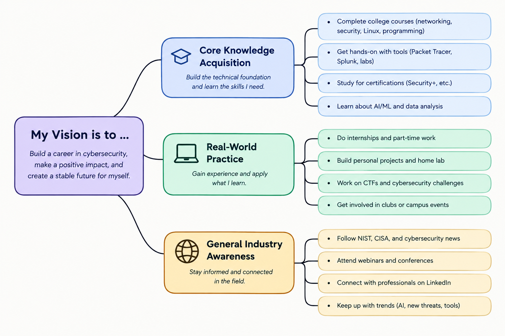

Cybersecurity is a field where people have to deal with a lot of information at once. There can be thousands of logs, alerts, and other events happening every day, so it would be difficult for one person to look through everything. Technology can help with this by doing some of the work faster and helping security professionals focus on the things that actually need their attention. Two computing techniques that I think are important in cybersecurity are AI and machine learning, and SIEM and security automation.
AI and machine learning can help cybersecurity workers find things that look suspicious. Instead of a person having to look through every single piece of security data, AI can look at a large amount of information and find patterns that might be worth investigating. This can save analysts a lot of time and help them find possible threats faster. The human is still important because someone has to look at the situation and decide if something is actually a threat or just a false alarm.
AI is becoming more common in cybersecurity, so I think it is something I should learn about as I work toward a career in the field. NIST has information about both the benefits and risks of using AI for cybersecurity. This means that cybersecurity workers will probably need to understand how to use AI while also knowing when its results should not be trusted without being checked. I want to learn more about AI, data, and how these tools can be used with the cybersecurity skills I am already learning.
SIEM stands for Security Information and Event Management. A SIEM collects security logs and events from different systems so that security teams can look at them in one place. This is useful because companies can have a huge amount of security information coming from computers, servers, firewalls, and other devices. Instead of checking everything manually, a SIEM can help organize the information and point analysts toward events that might be important.
Security automation can take this a step further by handling repetitive tasks. For example, some steps in investigating or responding to an alert can be automated instead of being done manually every time. This gives analysts more time to work on harder problems. I have already been learning about security logs and tools like Splunk, so learning more about SIEM and automation would be useful for the type of cybersecurity work I want to do in the future.
There are a few different ways I can prepare myself to use these technologies. I can continue learning networking, cybersecurity, Linux, and programming through college and online resources. I can also practice with Packet Tracer, cybersecurity labs, and SIEM tools. Getting more hands-on experience will help me understand how the things I learn in class are actually used in the real world.
I can stay up to date by following organizations like NIST and CISA and keeping up with cybersecurity news. I also want to pay attention to new AI tools and how companies are using them for security. Cybersecurity changes pretty quickly, so I think continuing to learn is going to be just as important as what I learn in college.
